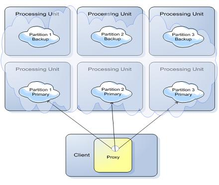

Some of the features discussed on this page are not part of the open-source edition, and are only available in the licensed editions (starting with
For an explanation of Data Partitioning concepts, refer to Data Partitioning page in our Architectural Overview section.
This is the default mode and applicable for most of the application. When using a hash-based load balancing policy, the client proxy spreads new written space objects into relevant cluster space nodes. The relevant space to rout the operation is determined using a space object routing field (also called a routing index) value hash code. This value, together with the number of the cluster partitions, is used to calculate the target space for the operation.
Target partition space ID = safeABS(routing field hashcode) % (# of partitions)
int safeABS( int value)
{
return value == Integer.MIN_VALUE ? Integer.MAX_VALUE : Math.abs(value);
}
The routing field must implement the hashCode method and will be used both when performing write and read operations. When using this approach the assumption is there is normal distribution of routing field values to have even distribution of the data across all the cluster partitions.
Getting the number of partitions can be done via:
Admin admin = new AdminFactory().discoverUnmanagedSpaces().addLocator(locators).createAdmin();
int partitionCount = admin.getSpaces().waitFor("MyDataGridName", 5, TimeUnit.SECONDS).getPartitions().length;
autoGenarate=false mode.Converting a numeric value to a String and using the string representation as the routing key will give different load balancing in comparison to a numeric value.
A cluster is defined with 3 partitions, where each partition has one primary and one backup space.

The cluster is configured to use the hash-based load balancing policy. The application writes the Account space object into the clustered space. The accountID field as part of the Account class is defined as the routing field using the @SpaceRouting decoration.
The Account class implementation:
@SpaceClass
public class Account
{
Integer accountID;
String accountName;
@SpaceRouting
public Integer getAccountID()
{
return accountID;
}
public String getAccountName()
{
return accountName;
}
// setter methods
...
}
The accountID field value is used by the space client proxy together with the number partitions in the following manner to determine the target space for the write, read, or take operations:
Target Space number = (accountID hashCode value) modulo (Partitions Amount)
If we will write 30 Account space objects with different accountID values into the cluster, the space objects will be routed into the 3 partitions in the following manner:
If the relevant target space or its backup space is not active an error message will be thrown.
See the below hash-based load balancing calculator that calculates the target space of a given routing value. You may change this to use String based routing values or numerical values.
import java.util.Hashtable;
import java.util.Random;
public static void LoadBalancingCalc() {
int partitions = 10;
Random rand = new Random(1000);
int maxObject = 1000;
String values[] = new String[maxObject];
for (int i = 0; i < maxObject; i++) {
values[i] = String.valueOf(rand.nextInt(maxObject));
}
Hashtable<Integer, Integer> dist = new Hashtable<Integer, Integer>();
for (int i = 0; i < values.length; i++) {
int hc = values[i].hashCode();
int targetPartitionID = safeABS(hc) % partitions;
Integer dist_value = (Integer) dist.get(targetPartitionID);
if (dist_value == null)
dist_value = new Integer(0);
dist.put(targetPartitionID, dist_value.intValue() + 1);
}
System.out.println("Total amount of objects:" + maxObject);
System.out.println("Total amount of partitions:" + partitions);
for (int i = 0; i < dist.size(); i++) {
System.out.println("Partition " + i + " has " + dist.get(i) + " objects");
}
System.out.println();
System.out.println("Routing field values:");
for (int i = 0; i < maxObject; i++) {
System.out.print(values[i] + ",");
if ((i % 80 == 0) && (i > 80))
System.out.println();
}
}
static int safeABS(int value) {
return value == Integer.MIN_VALUE ? Integer.MAX_VALUE : Math.abs(value);
}
Here is a sample output:
Total amount of objects:1000
Total amount of partitions:10
Partition 0 has 107 objects
Partition 1 has 104 objects
Partition 2 has 104 objects
Partition 3 has 99 objects
Partition 4 has 104 objects
Partition 5 has 92 objects
Partition 6 has 103 objects
Partition 7 has 103 objects
Partition 8 has 90 objects
Partition 9 has 94 objects
Routing field values:
487,935,676,124,....
The following table specifies when the different batch operations executed in parallel manner and when in serial manner when the space running in partitioned mode:
| Operation | Transactional | Max values | Execution Mode | Returns when.. |
|---|---|---|---|---|
| readMultiple | NO | n/a | Parallel | Returns when all spaces completed their operation |
| readMultiple | YES | Integer.MAX_VALUE | Serial | Returns when found enough matching space objects |
| readMultiple | n/a | Integer. MAX_VALUE | Parallel | Returns when all spaces completed their operation |
| takeMultiple | n/a | Integer.MAX_VALUE | Serial | Returns when all spaces completed their operation |
| takeMultiple | n/a | Integer.MAX_VALUE | Parallel | Returns when all spaces completed their operation |
| writeMultiple | n/a | n/a | Parallel | Returns when all spaces completed their operation |
| updateMultiple | n/a | n/a | Parallel | Returns when all spaces completed their operation |
IReplicatable (partial replication) and replication matrix.